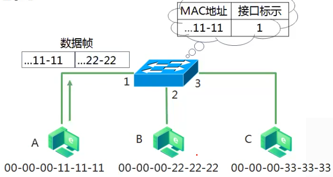
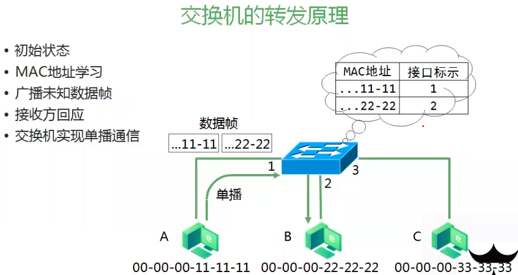

Computer Networking
Term 术语
NAT
NAT（Network Address Translation），也称网络地址转换。
3种实现方式：静态转换Static Nat、动态转换Dynamic Nat和端口多路复用OverLoad。
TTL(Time To Live)
TTL是 Time To Live的缩写，该字段指定IP包被路由器丢弃之前允许通过的最大网段数量。
TTL是IPv4报头的一个8 bit字段。

TTL与DNS TTL有区别: 二者都是生存时间，前者指ICMP包的转发次数（跳数），后者指域名解析信息在DNS中的存在时间。
PTR
PTR (Pointer Record)，指针记录，是电子邮件系统中的一种数据类型，被互联网标准文件RFC1035所定义。
PTR记录解析IP地址到域名，是反向记录。
网络部署相关笔记
判断电脑能否上网的方法
- 1.路由器WAN口与其连接的光猫互通，确保能够顺利拨号；
- 2.确保电脑与路由器的LAN口互通;
路由器与交换机的关系
路由器是拥有路由、NAT、DHCP服务等多种功能的交换机。
当路由器处于路由模式时，所有的lan口相当于一台交换机。
当路由器处于路由模式时，所有功能都是开启的。
但除了路由模式外，比如处于mesh子路由或者中继模式（AP模式）时，路由模式中的功能都会失效，此时，路由器的作用等同于一台交换机，wan口也就变为lan口了。
保险起见，对于交换机同时连接wan口和lan口的情况，建议使用支持vlan的交换机。使用VLAN交换机，在交换机上将WAN和LAN进行隔离。
ref: https://www.bilibili.com/video/BV1QU4y1n7D3
TAP和集线器
TAP和集线器都是充当流量复制器的作用，但TAP能处理的流量更大
ref: https://blog.csdn.net/badseeds2000/article/details/105257993/
IDS和IPS的区别
IDS（入侵检测系统）旁路部署
IPS（入侵防御系统）串行部署
ref: https://zhuanlan.zhihu.com/p/96942352
常识
标准内网地址
10.0.0.0-10.255.255.255
172.16.0.0-172.31.255.255
192.168.0.0-192.168.255.255
windows cmd 批量ping
for /L %i in (11,1,255) do @ping 172.%i.0.1 -n 1| find "TTL=25"
- FOR表示循环
- /L表示循环1次加上N，N由IN (11,1,255)中的第二个数字决定，此处为加上1
- %i IN (0,1,255)表示从11开始，每次加1，直到255
后面的应该能直接看懂了，不一一解释了。
交换机工作原理
交换机看的是二层的MAC地址
实际通信中不会只靠MAC转发。
如果A、C在不同网段（比如：A 192.168.3.1，B 192.168.100.1），在封装数据包时，因为C不在同一网段，A封装的MAC地址是网关的MAC地址。
在同一网段通信，封装前会有个ARP过程，源MAC是自己的，目标MAC是目标主机的。
交换机转发原理
- 初始状态
- MAC地址学习
- 广播未知数据（广播帧FF:FF:FF:FF:FF:FF）
- 接收方回应
- 交换机实现单播通信
交换机会维护一个Mac地址表，加入Mac地址表为空，A发送数据帧到交换机，交换机记录源MAC和所进入的接口，在交换机的MAC地址表中写入一个对应关系。

如果在MAC地址表中找不到目标MAC的对应关系，就会在除了接收该数据的接口以外，都以泛洪（广播）形式发送。

交换机允许一个接口存多个MAC，所以容易被攻击。
交换机以太网接口的工作模式
- 单工：两个数据站之间只能沿单一方向传输数据
- 半双工：两个数据站之间可以双向数据传输，但不能同时进行
- 全双工：两个数据站之间可双向且同时进行数据传输
交换机以太网接口速率
- 接口连接时进行协商 （会按照最低速率，10M和100M就按10M进行）
- 协商失败则无法正常通信
ext: ARP 与目标通信时一定会获取目标的IP地址，可能知道目标IP，但不知道目标的MAC地址。 此时就通过ARP协议得知对方的MAC地址。发广播数据。
交换机配置
- Console电缆 （用Console线，winscp 协议：Serial）
- 物理连接
- 计算机COM口
- 交换机/路由器Console口
- 软件连接
- 超级终端
- 其他软件
Cisco体系设备常用模式
用户模式 -> 特权模式 -> 全局配置 -> 接口模式
- 用户模式 -> 特权模式：en （完整命令是enable）
- 特权模式 -> 全局配置：conf t （完整命令是config terminal）
- 全局配置 -> 接口模式：int f0/1 (int的完整命令interface fastethernet 0/1)
- 命令含义：
- interface：关键字
- fastethernet:
f0/1：f代表百兆接口，0是模块号，1是表示FasterEthernet的端口号
其他命令：

?类似linux中的Table补齐命令

Cisco查看交换的MAC地址表
Switch# show mac-address-table [dynamic]

路由器的原理与配置
路由器要进行跨网段通信
全球网络把网络隔离成多个（小的）广播域，根据IP地址段进行区域划分，防止过多的广播地址在这里传输下去。 （因为三层协议上有ttl，即time to live, 数据包的生存周期，每经过一个节点，ttl减1，所以三层的广播不会永久广播下去。但是二层协议不同，没有ttl，如ARP广播，有可能无止境传输下去） 所以要用三层设备对广播域进行控制。三层设备有路由器，还有高于三层设备的防火墙，以及SDN模式服务器。

阅读推荐
- 计算机网络 （谢希仁，第7版，另有配套答案书一本，最近也出了一本配套实验书）—— 准备考研的必看这本
- 计算机网络：自顶向下方法(第7版) —— 非考研向自学的推荐这本，能看英文原版的建议看原版
- 《TCP/IP详解》第一卷 —— 要进阶和深入的看
- Web开发技术-HTTP
其它补充
企业组网网络划分
通常划分为：业务网（或办公网）、生产网（一般包含核心开发环境）、运维网。 （P.S.：小企业可能是三网打通的）
系统安全类日志一般都是在运维网区域，所以一般不会对外提供和暴露，如果确实需要，一般需要通过堡垒机访问相关网络环境。